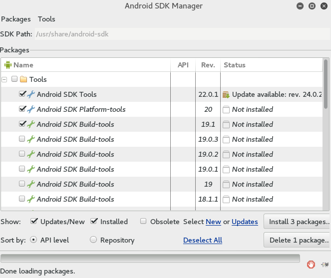
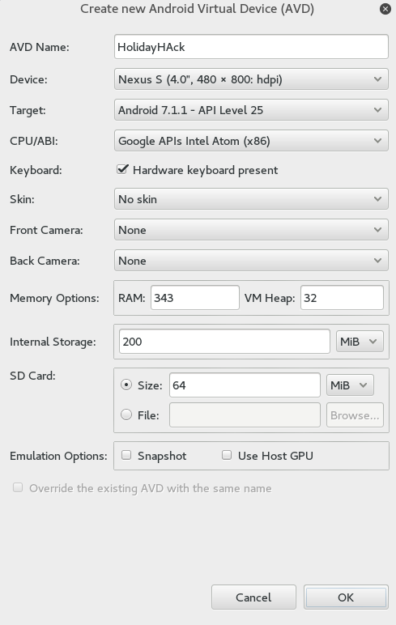
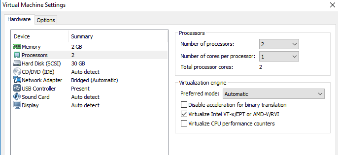
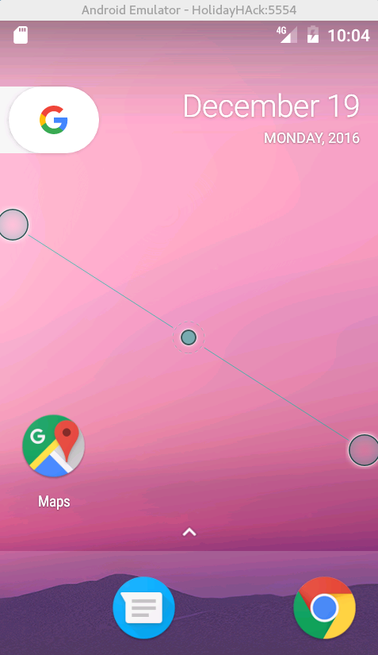
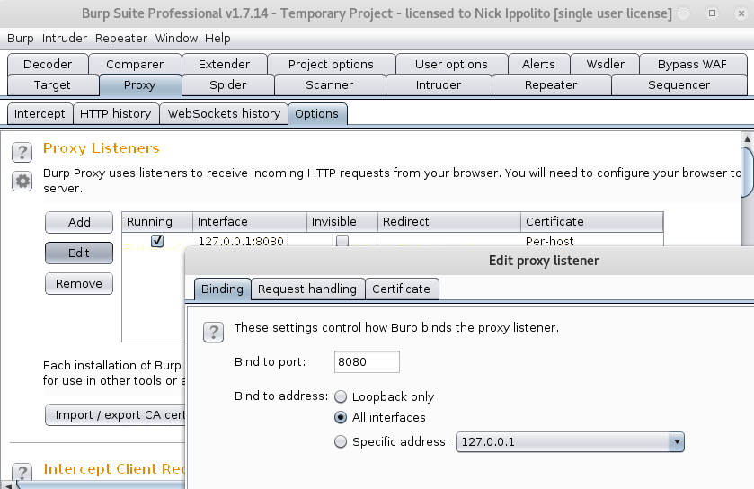

This guide should get you an Android VM that is capable of running the needed programs for the Holiday Hack Challenge. This guide will probably get out-dated rather quickly, so if something doesn’t line up perfectly just use common sense. Also this was my first time touching Android, so I may not do things the most efficient way – I would hope there’s some command line flags to automate this update process.
Building the Android VM
- Install the Android-SDK and qemu-kvm.
apt-get install android-sdk qemu-kvm - Launch the android sdk.
android -
In the Android SDK Manager, uncheck everything but Android SDK Tools, Android SDK Platform-tools, and Android SDK Build-Tools underneath the tools folder. 
- Click Install 3 Packages, accept the license agreement and begin installation.
- Once the update finishes, close and re-open the Android SDK Manager.
- We now have a lot more items, with everything under API 25 being checked. Uncheck that and click install 2 packages, this should update Android SDK Tools and SDK Platform-tools.
- Close and re-open the Android SDK Manager yet again… This is a bit like the Windows Update Process.
- You should now see “SDK Platform” underneath the API 25 folder. Uncheck everything but that and click Install 3 packages.
- You know the drill… Close and Re-Open the Android SDK Manager.
- Uncheck everything in the API 25 folder yet again, and select Google APIs Intel x86 Atom System Image
- Good News! We can now create the Android Device. Click on Tools in the top left and go to “Manage AVD”
- Fill the options as you see fit, below are the ones I did: 
- Click Start to launch the KVM. If you get an error here you most likely need to enable virtualization. In VMWare Workstation the option is “Virtualize Intel VT-x/EPT or AMD-V/RVI” underneath the processors option. If the option isn’t there right click on the VM, go to Manage and Change Host Compatability to the highest version of VMware it lets you. 
- You should now have an Android VM! 
- Click the SDCard in the top left (you may have to drag it down).
- Select the SDCard and click something along the lines of “Use with this device, format, or erase”.
Configuring the Proxy on the Phone
- Open Settings and click “More” underneath “Wireless & Networks”
- Click on “Cellular Networks”
- Click “Access Point Names”
- Click “T-Mobile US”
- Click “Proxy” and set it to your Kali box.
- Clicl “Port” and set it to your Kali box.
- Click the 3 dots in the top left and save your settings. After you do this you can go back to the home screen, by clicking the circle button to the right of the VM.
- Open a web browser and you should be able to see requests now going through burp. If not, open up Burp go to the proxy > Options tab click edit and change it to listen on all interfaces. 
Installing the Burp Certificate
- On your Kali go to http://burp/cert (note the proxy has to be configured)
- Download cacert.der
- Rename cacert.der to cacert.cer
- Copy the cert to your device by running:
/usr/share/android-sdk/platform-tools/adb push cacert.cer /mnt/sdcard/cacert.cer - Click Settings > Security > Install from SDCard > Virtual SD Card and click on cacert.cer
- Give it a name, and click Okay.
- It will force you to set a PIN, click “Continue without fingerprint” then set a 4 digit pin.
- All web and app traffic should now be going through Burp!